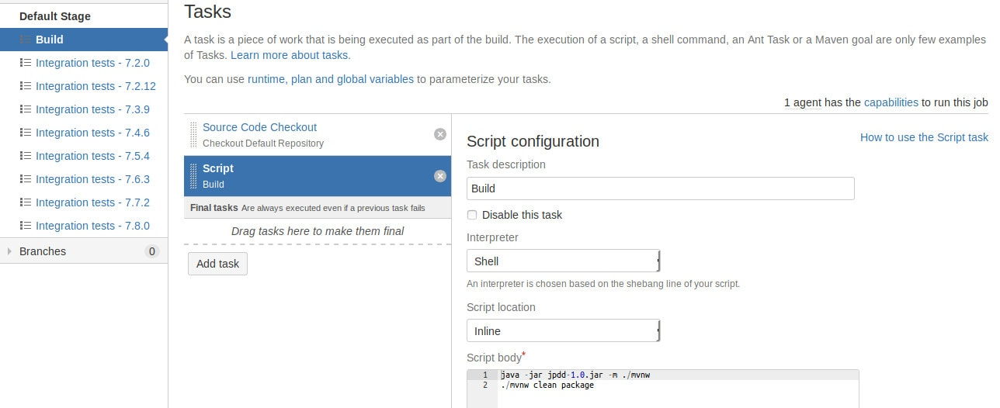
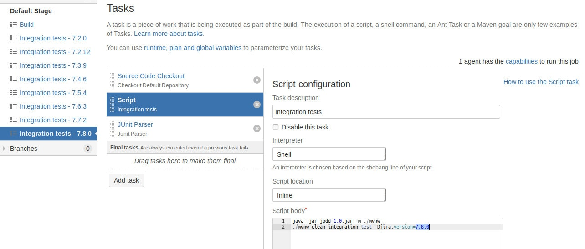
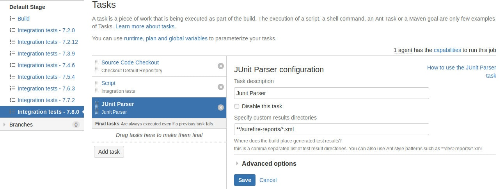
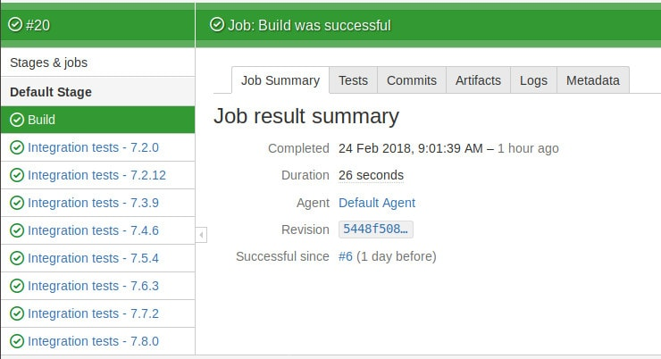

I don't think we can find a single person patient enough to run integration tests locally on the every supported Jira version. It's time to run a CI server.
Building Jira plugin on Bamboo CI
I will use bamboo here because it's from the Atlassian stack. I would not lay you bamboo is the best CI, but it integrates with Jira well. I worked with many other, and the steps I'll apply here will be similar for all the other CI applications.

The method I use represents my preferences, and you may not share the same values I have. I believe CI should do as few as possible. For example, we should not require more than JDK from our agents. All the knowledge and tools needed to build a software should be available in the git repository. The advantage of this approach is that you can assemble and run a program the same way in your local environment and CI. You can also replace CI easily.
Preparing maven
As I mentioned before working JVM is the only requirement CI agents should meet. I like the Gradle's approach. They deliver wrapper around the Gradle, so you don't have to install it if you'd want to build a project. Although it's possible to use Gradle to make a Jira plugin, I'd like to make this tutorial as "standard" as possible. There's similar project related to maven - maven wrapper. I use it in a couple of projects without any problem yet.
Install maven wrapper
Now you can run maven without maven installed.
Maven is ready, but it's not enough. We need to add Atlassian's public repository to our pom.xml file.
Unfortunately, we can't download all the dependencies from the public repository - see JRASERVER-43031. I'm not sure what's the reason. Most probably it's due to licensing issues. We need to install these extra dependencies manually. I don't like to do manual work, so I created a Jira Plugin Dependencies Downloader.
Headless Browser
By default, integration tests run on Firefox browser. Developers use Xvfb to run Firefox in headless mode. The approach has some disadvantages:
- We don't use the same browser our customers use. Most of them use Chrome,
- We need to install Xvfb on every agent,
I added support for Chrome in a headless mode. Currently, only 64 bit Linux is supported, but it's not a problem. I don't run integration tests on windows machine yet.
Install chrome on CI agent machines
We need to install chrome on our CI agents. It also could be automated, but installation process may vary on different operating systems, and I didn't go into automation here. Maybe next time.
I run my CI agents on ubuntu server. If you have a similar environment, you can follow my instructions.
Configure CI
Configuring CI is rather straightforward. First, you need to add the repository and create a project.
The first job will build the plugin and prepare plugin artifact.

Rest will run integration tests for each Jira version separately. Bamboo can run each job in parallel. The only thing that limits us is how many bamboo agents we have.

Integration tests will produce JUnit report. Bamboo can parse it for us.

In the end, it should look this.

Now we have configured CI for our plugin. Next time we're going back to extend the view of Recurring Issues.